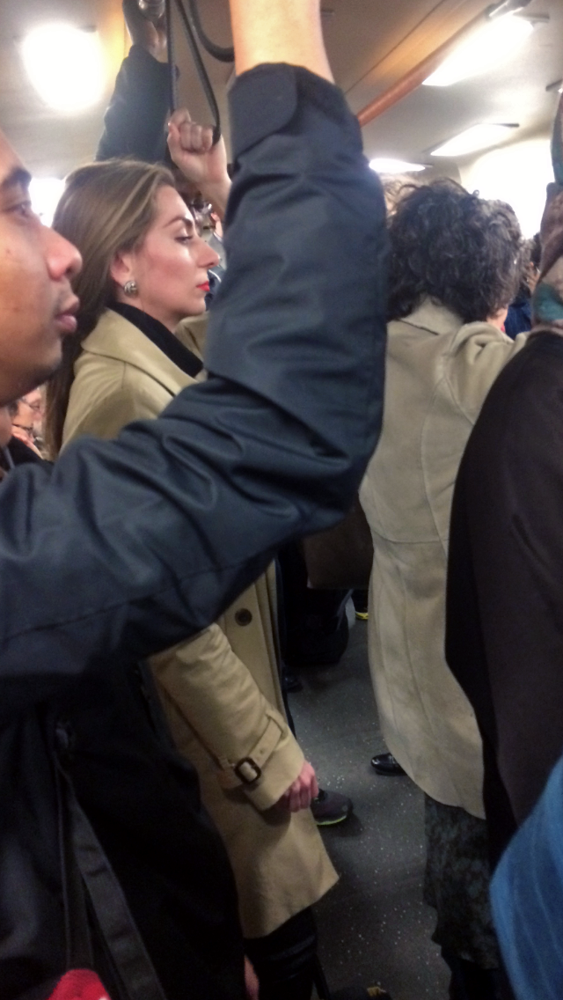

Joseph DeLappe - The Salt Satyagraha Online: Gandhi's March to Dandi in Second Life
On the 5th of April 2008, Joseph Delappe started a 240-mile journey that spanned across 22 days (in real life) in the game Second Life. Using his Gandhi avatar, DeLappe used a treadmill to control his character to reenact Mahatma Gandhi's “Salt March to Dandi” - a protest against the Brisitsh Salt Act of 1882. Delappe took this further by aligning the performance with the original dates of the protest back in 1930. His work resonates with my practice as a whole, as my works frequently attempt to question the physicality of being on the internet. For example, in Let's install an Exhibition (2024), a site-specific installation and performance that took place on Google Maps, acknowledges the evident abstract border of URL and IRL. The installation explores the in-between states of the legitimacy of labour online compared to physical labour, as we invest more time and emotional energy into it. This invites the viewer to reflect on the labour, even if it is through a digital lens, similar to how DeLappe questions the legitimacy of the online protest despite the physical labour.
Alessandro Sambini - People in Galleries
Alessandro Sambini’s “People at an Exhibition” is a web-based project that lives on YouTube and as a physical performance. The work consists of a robot that films several people as they enter a room with a green background. The recording is then uploaded to a YouTube channel titled People At An Exhibition as stock footage. From this perspective, “People at an Exhibition” faces through the exploration of self-copyrighting and exploitation online. These videos, much like the live-stream and Instagram post of @_b4n_g4unt_, are the likeness of the subjects, which were mediated by the artist. This questions the owner of the work - an interesting point brought to by one of my tutors during a crit session. To an extent, I believe that the work belongs to the artist as they are the driving force of the project, and the visitors are the subject, much like a film director and the actors
Sophie Calle - Suite Vénitienne

Being the first ever performance piece I’ve done, especially as straining as this work, was a new experience for me. It got me thinking about the nature of the performance and how it would affect my perception of the person I'm following. Since we are both close friends, questions started to dawn on me. How would this experience affect my view of him? Am I using my friend? Is this too much of an invasion of privacy? This is where the works of Sophie Calle come in. Her performance works show an intimate insight into the act of following, while also revealing the exploitative nature of the works. Calle’s work, Suite Vénitienne, is a collection of photographs and text detailing her fixation upon a man named “Henry B”. Secretly over two weeks, Henry was followed by Calle. His day-to-day actions are analysed and recorded. Through these actions, Calle starts to fall in love with Henry. While I wouldn't describe myself as having “fallen in love” with @_b4n_g4unt_, I do sense a deeper connection with my friend. Although I do agree with Calle when she sees the action of stalking and photographing Henry as to immortalise the moment and stake a claim on ephemeral things. In my case, the live stream acts as an archive of my friend - a raw and intimate version of him. What seems to be obsessive stalking, Calle’s actions reflect the day-to-day behaviour of online stalking. It has a kind of anonymity and detective tactics that Calle could only dream of. Like Henry and @_b4n_g4unt_, we are all unknowing participants in the intimate quest for closeness that Calle yearns to achieve.
Lauren Lee McCarty - Follower
Follower is a website/performance, created by Lauren McCarty, where people can sign up for a real-life follower for a day. However, they would not know when or how they are being followed during the day. At the end of the day, the person will receive an image of themselves taken at a random time during the day. This is a public performance piece where anyone interested in following someone can set it up in the city where they live. This work has a direct correlation to my degree show in terms of physicalising the Internet experience. Like most social media, we allow users to “follow” our lives without any hesitation. McCarthy has perfectly emphasised this by giving agency to the participant to make a request for them to be followed. We often forget that it is real people whom we interact with on the internet. We are clouded by the anonymity of digital profiles and usually get away with actions unprecedented in real life. This numbness also shows people wanting a more real sense of connection, an offline connection. Why else would people sign up to be followed? I like how she presented her screenshots in frames. Very low-tech. It is exactly what I have been experimenting with, especially in the SPG show last February. By remediating these digitally native images into physical form, it opens up for primarily visual inspection, drawing attention to aspects of the image that were easily overlooked by users. It has been decontextualised, which adds to the elusiveness of the subject and follower.
Wang Bing - West of the Tracks
West of the Tracks is a Chinese documentary film by Wang Bing. It is a 9-hour-long film that covers the 2 years, from 1999 to 2001, displaying the decline of Shenyang’s industrial Tiexi district. I was particularly interested in the cinematography of the documentary. Its style is raw and unfiltered. The long takes of the group of factory workers give us a glimpse of their day-to-day lives. Filmed using a mini-DV camera, the cinematography reflects the conditions of the industrial district. It is also filmed with a fish-eye lens, which creates this dreamlike imagery, distorting people's perception of the place. It doesn't look real. With that, there are some parallels to my stream. I try to engage with the cinematography in a similar way to Bing. The rougher quality from the mini DV is mirrored through the use of my iPhone 11 camera with an inconsistent sensor. The images are constantly going in and out of focus, and there is constant jitteriness within the shots. Like the workers, @_b4n_g4unt_ and his friends do not seem to acknowledge the camera, creating an uncomfortable experience for the viewers (and filmmaker). The presence of filming is being contradicted by the fact that no one acknowledges the camera, which feels like we’re invading their space.
Evan Roth - The Internet Cache Self-Portrait

The Internet Cache Self-Portrait is a series by the artist Evan Roth. The artist compiles a stream of uncensored images, collected through daily use of the Internet within the browser’s cache. It forms a “uniquely 21st-century self-portrait”, both as a portrait of the Internet at that specific moment in time and also a “contemporary nude”, exposing the subjects' inherently private online interactions. These images are printed out onto rolls of vinyl, materialising the data stored. As the audience, we are enabled to be intimate and fill in the blanks of what the subject could be like, their personality, etc. This work directly inspired the addition of printed receipt paper detailing all the users who follow @_b4n_g4unt_ on Instagram. Just like how @user94736298 followed him in real life, there are hundreds more accounts constantly lurking with his digital presence.
LOWTECH
LOWTECH, as defined by fakewhale as “a practice that reframes technology not as a symbol of linear progress but as a space for questioning and redefining sculptural language” (fakewhale, 2025). Having roots from the avant-gardes, such as Duchamp and Moholy-Nagy. It was a period when technology was used as a fundamental part of the production. However, LOWTECH is within the context where technology has become banal and has lost its awe value. This then encouraged artists to create work with the subversion of contemporary technology and “explore a broader concept of digital art, not defined just by its medium” (ibid. ). This aesthetic is prevalent in my work, or to be more specific, the way I think of the presentation of my work. It lies between the realms of functional and dysfunctional tech. Using the technology not as it is intended (Copeland show), or in a context where it is unconventional, such as the gallery space, opens up for new perspectives that I could utilise. This method of presenting resonates with my practice as it allows for deeper intimacy between the work and the audience. The raw and brutalist approaches (compression artefact #2) create a vulnerability between the subject and audience, which I feel like allows for a deeper connection between the two.
Marina Abramović - Relation in Time
Marina Abramovic is one of the most prominent artists in performance art and thinking deeply/critically about the self. In terms of inspiration for my performance, her work was one of the first to come to mind, not just with me but with others. Everyone I discussed with drew this reference, and I can definitely see why. Abramovic’s performance is provoking as it “tested the limits of her own physical and mental endurance in her work, subjecting herself to exhaustion, pain and even the possibility of death” (Royal Academy of Arts, 2023). Despite this, there is still room for reflection on identity, gender, and perspectives. Marina Abramovic’s Relation in Time stood out to me the most. It represents the … to perform in front of an audience. For the performance, Abromovic and Ulay, her former partner and collaborator, had their ponytails tied together. While it represents the literal intimacy while performing, there were points where they couldn't take it anymore. They had then invited museum visitors to view them, which allowed them to go further. This experience mirrors the one I had during the 24-hour livestream, but instead of physical visitors, I had my livestream viewers and the live chat. There were times when it was boring ( @_b4n_g4unt_ studying), but seeing people engaging in my performance and the subject allowed me to continue.
Tehching Hsieh - One Year Performances
I had doubts about performing initially, pending 24 hours (originally 1 week), constantly following and filming my friend. Am I wasting my time? People seem not to understand that with Hsieh’s work at the time, as “why the artist would ever choose to subject himself to such physical and mental extremes, and how 'wasting time' could even qualify as art” (Kim, 2017). However, it’s about perspective. As Hsieh puts it, “We can talk about suffering, but then we have to talk about freedom. Or we can talk about freedom, but we also have to talk about discipline. There are many things interwoven.”(ibid. ). Hsieh’s art is a homage to everyday life, which asks us to meditate on the time we have for ourselves. It's a reflection of how we have used our time. This is especially important in an increasingly digital age, where technology simultaneously frees up our time and distracts us to no end. Hsieh’s performances give us that freedom to not be constrained.
Amalia Ulman - Excellences & Perfections

Amalia Ulman’s Excellences & Perfections is a scripted Instagram performance. Over 5 months, Ulman adopted a new persona online - an extreme makeover. She uses new 21st-century female tropes to explore social media’s power to create realities out of fictions. She tackles the performative nature of influencers and how an image can be a signifier of class, and how cultural capital is reflected in selfies. The decision to use Instagram as the medium meant that the public could also and did interact through the comments section with the artist during the performance. This would directly influence the work as it was being performed. It also adds the authenticity of the work: the public couldn't distinguish whether it was real or fake. Even Ulman’s close friends were confused when separating her fictional online persona - it was becoming too real. However, presenting this performance was another challenge that I am even facing for my degree show work. For something that is inherently meant to be consumed on a device/online, how can we emphasise the work in the physical space without being mundane? Most of the exhibition, including Excellences & Perfections, used large-scale prints of Ulman’s selfies and Instagram posts. Maya Man, an artist focused on contemporary identity culture on the internet, said, encapsulates why I feel fascinated and excited with experimenting with presenting work not native to their medium. She argues that the internet has a “fluid quality where you can view it in many different ways” (Chiou, 2024) and with the decrease in users’ attention span, remediating these digital artefacts allows them to consume and have authority over the audience’s attention.